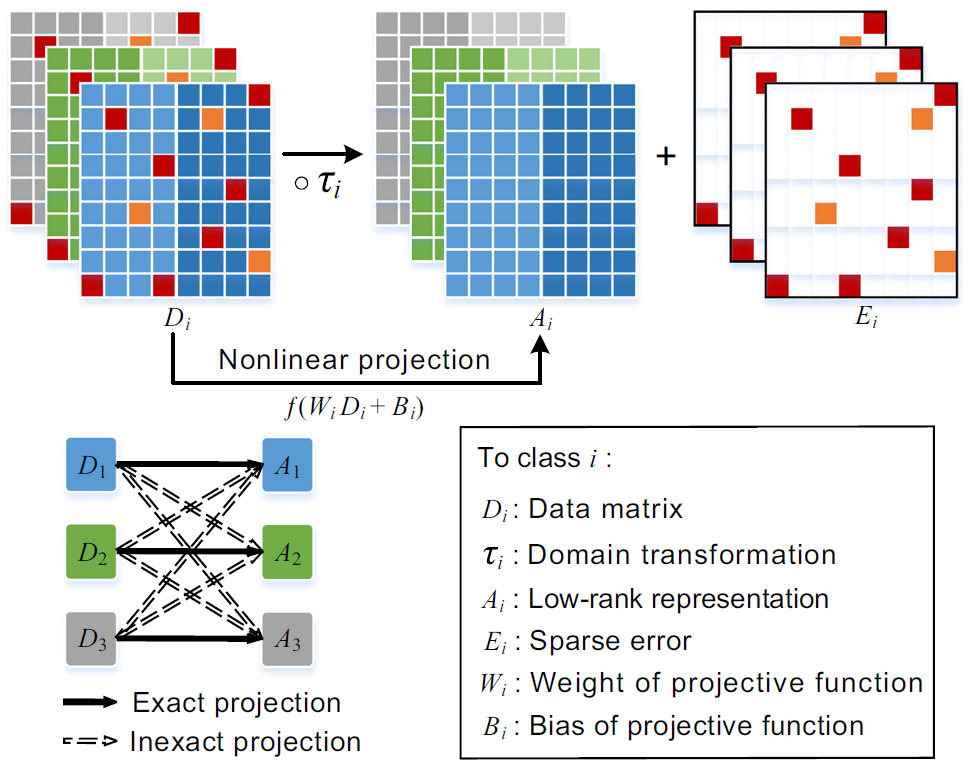

Researches

Fig. 1 An example of CPLRR architecture with 3 classes. In a classwise manner, our approach jointly aligns images and learns a nonlinear projective function. It separates out the low-rank components with the domain transformations and projects the original corrupted images to the low-rank representations of the exact categories.
\begin{equation} \begin{aligned} \label{eq:CPLRR} \min_{A,E,\varDelta\tau,W,B} \quad &\sum_{i=1}^{N}||A_i||_* + \lambda ||E_i||_1 \\ \mathrm{s.t.} \, \quad \quad & D_i \circ \tau_i + \sum_{k=1}^{n_i} J_{ik} \varDelta \tau_i \varepsilon_k \varepsilon_k^{\mathrm{T}} = A_i + E_i, \\ & A_i - f(W_iD_i + B_i) = 0, \ \ i = 1,2,\cdots,N, \\ & \! - \sum_{j=1}^{N} ||A_i - f(W_iD_j + B_i)||_\mathrm{F}^2 < \xi,\ j \neq i . \\ \end{aligned} \end{equation} S. Xue and X. Jin. Robust classwise and projective low-rank representation for image classification. Signal, Image and Video Processing, in press, 2017. DOI 10.1007/s11760-017-1136-1